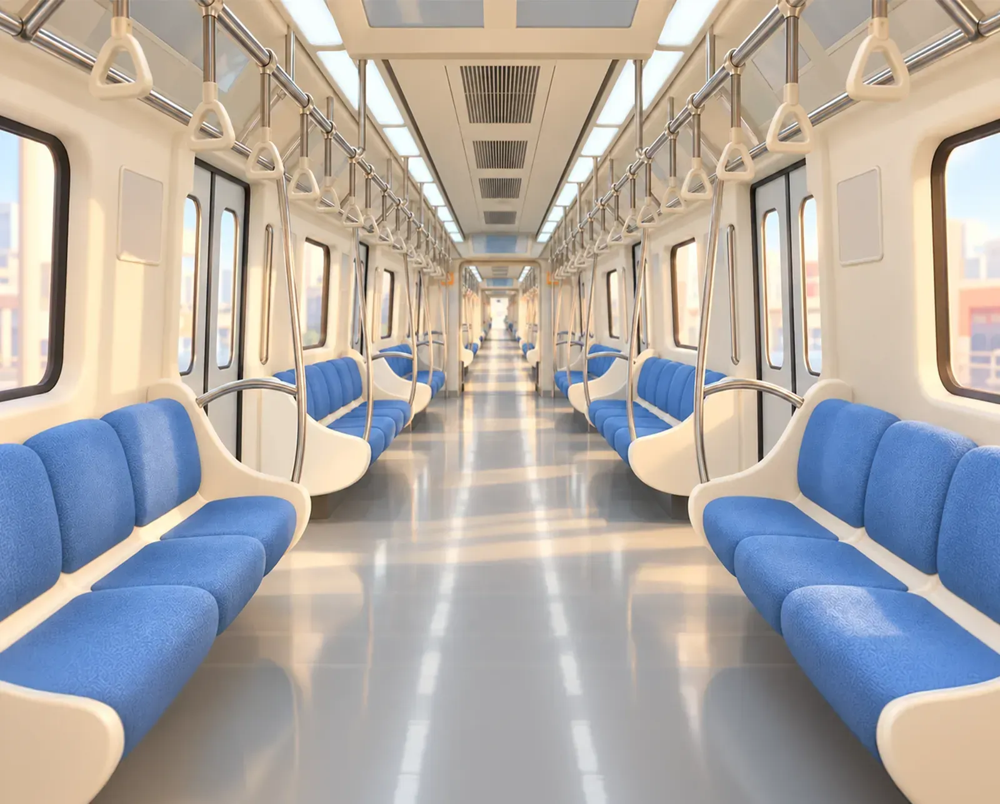
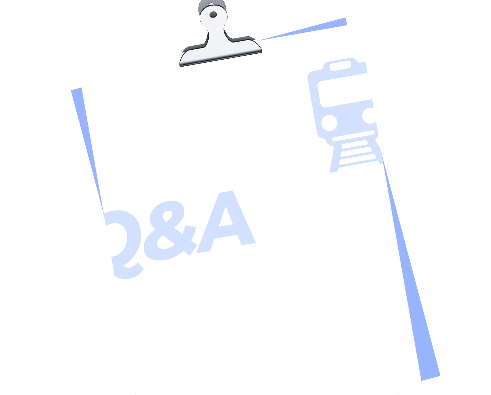
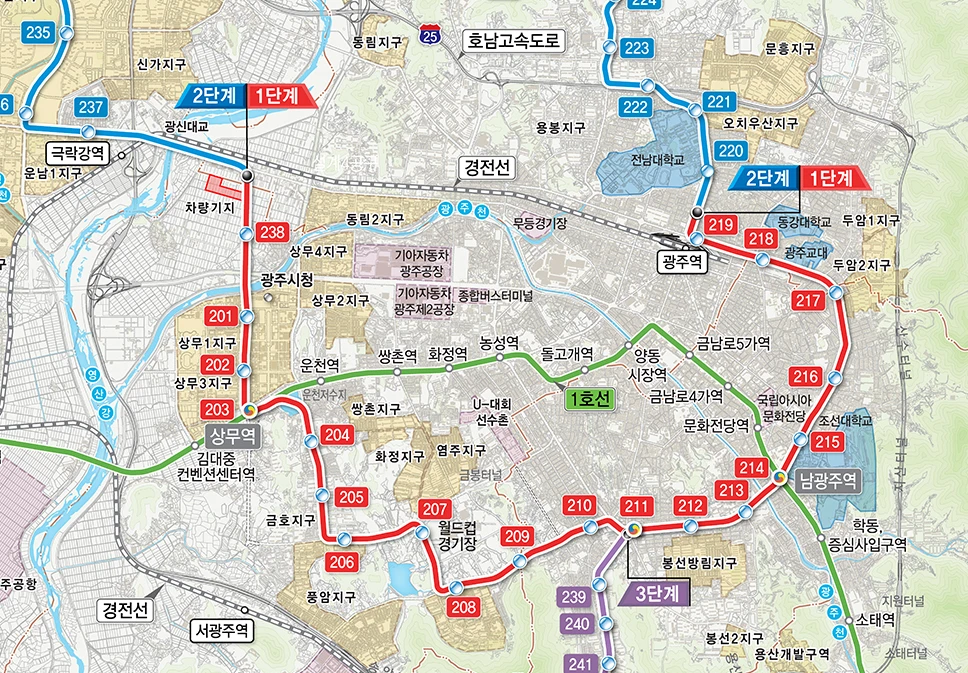

2호선 역 이름이 정해졌어요, 우리 동네 역명은 뭘까요?
2028년 12월 개통 예정인 광주도시철도 2호선 1단계 구간의 역명이 확정되었습니다. 총 20개의 역 중 환승역인 상무역과 남광주역을 제외한 18개 역인데요. 어떤 역명이 탄생했는지 지금부터 소개해 드릴게요.
- 1단계 개통 예정
- 역명 확정
- 18개 역총 20개 역 중 환승역 제외
역명 제정
18개의 역 이름, 이렇게 정해졌습니다
도시철도 2호선 1단계 역명 제정에는 시민 총 1만 3천 779명의 의견이 반영되었어요. 지난 3월 역명 의견 조사에 온라인 1만 1천 293명, 오프라인 2천 486명이 참여했거든요. 최종적으로 시민 의견조사와 지명위원회 심의를 거쳐 정거장 역명이 확정된 것이랍니다.
역명 의견 조사 참여
1만 3천 779명
- 온라인
- 1만 1천 293명
- 오프라인
- 2천 486명
- 역명 의견 조사
- 시민 의견조사
- 지명위원회 심의
- 역명 확정
역명 소개
광주도시철도 2호선 1단계 역명을 소개합니다

| 구분 | 한글 | 영어 | 중국어 | 일본어 |
|---|---|---|---|---|
| 238정거장 | 유덕(환승역) | Yudeok | 柳德 | ユドク |
| 201정거장 | 시청 | City Hall | 市厅 | シチョン |
| 202정거장 | 치평 | Chipyeong | 治平 | チピョン |
| 204정거장 | 운천저수지 | Uncheon Reservoir | 云泉水库 | ウンチョンジョスジ |
| 205정거장 | 금호 | Geumho | 金湖 | クムホ |
| 206정거장 | 풍금사거리 | Punggeum Sageori | 枫金十字路口 | プングムサゴリ |
| 207정거장 | 월드컵경기장 | World Cup Stadium | 世界杯体育场 | ワールドカップキョンギジャン |
| 208정거장 | 풍암호수공원 | Pungam Lake Park | 枫岩湖水公园 | プンアムホスゴンウォン |
| 209정거장 | 금당산입구 | Geumdangsan | 金堂山 | クムダンサンイプク |
| 210정거장 | 무등시장 | Mudeung Market | 无等市场 | ムドゥンシジャン |
| 211정거장 | 백운광장 | Baegungwangjang | 白云广场 | ペグングァンジャン |
| 212정거장 | 기독병원입구 | Christian Hospital | 基督教医院 | キドクピョンウォンイプク |
| 213정거장 | 방림(양림역사문화마을) | Bangnim (Yangnim History and Culture Village) | 芳林(杨林历史文化村) | パンニム(ヤンニム歴史文化村) |
| 215정거장 | 조선대 | Chosun Univ. | 朝鲜大学 | チョソンデ |
| 216정거장 | 법원입구 | Court | 法院 | ポボンイプク |
| 217정거장 | 산수 | Sansu | 山水 | サンス |
| 218정거장 | 교대 | Gwangju Nat'l Univ. of Education | 光州教育大学 | キョデ |
| 219정거장 | 중흥삼거리 | Jungheung Samgeori | 中兴三岔路口 | チュンフンサムゴリ |
흥미 포인트
도시철도 2호선 1단계
역명의 흥미 포인트 5가지
-
광주청사역이 아닌 '시청'으로 확정
행정통합으로 '광주청사역'을 검토했지만, 시내버스 정류장 이름 등으로 시민에게 친숙한 '시청'을 선택했어요.
-
'광주역'이 '중흥삼거리'로, '광주교대'는 '교대'로
설문에서 지지를 받은 역명은 '광주역'과 '광주교대'였지만, '광주'를 뺀 친숙한 거점 이름을 쓰는 방향에 따라 '중흥삼거리'와 '교대'가 되었어요.
-
'법원입구'에도 이런 비하인드가
원래는 검찰청이 들어간 이름이었지만, 검찰청이 공소청·중대범죄수사청으로 바뀌며 '법원입구'가 되었습니다.
-
이 역들은 박빙이었어요
시민 투표 결과는 다음과 같았습니다.
확정 역명 득표율 경쟁 역명 득표율 유덕 40% 버들마을 39% 치평 37% 상무지구 32% 풍암호수공원 50% 풍암 42% 유덕, 치평, 풍암호수공원역은 2위 역명과 치열한 다툼을 벌였답니다.
-
친숙한 지명이 가득해요
운천저수지, 풍암호수공원, 무등시장, 금당산입구, 방림(양림역사문화마을)처럼 친숙한 지명과 동네 이름이 그대로 역 이름이 되었어요.
시범운행 돌입
앞으로의 일정
역명까지 확정되고 나니 광주도시철도 2호선이 더 실감이 나는 것 같죠? 광주도시철도 2호선 1단계 구간은 내년까지 공사를 마치고 시범운행에 돌입할 예정입니다. 광주를 잇는 동그라미! 앞으로도 도시철도 2호선 소식을 발 빠르게 전해드릴게요.